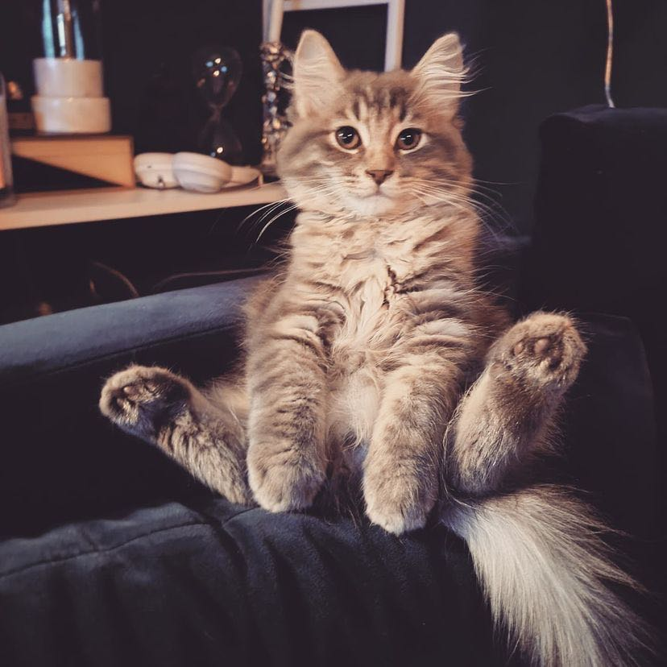

Undergraduate
School of Computer Science 计算机学院 |
 |
My name is 张芷苒, which translates to English using Chinese "pinyin" as "Zhiran Zhang". I prefer to go by the name "Minerva".
I was born in Xiangtan, Hunan, but I grew up in Shenzhen, Guangdong, a beautiful city by the sea in southern China that is close to Hong Kong.
I am currently a Junior student at the University of Science and Technology of China (USTC), majoring in Computer Science and Technology.
Prior to that, I attended high school at Shenzhen Middle School and middle school at Shenzhen Foreign Languages School (SFLS), which I am still
very in love with and grateful to until this very day.
I love traveling, studying different languanges, reading, watching movies and playing sports in my spare time.
I am also a huge fan of art and music -- I play the piano whenever I can.
I love to see the world! I traveled to the United States three times, Japan and Britain twice, and have also been to Italy, Switzerland, France, Dubai, and Abu Dhabi.
My favorite place is Lauterbrunnen, where the famous J.R.R. Tolkien got his inspiration of Rivendell (Imladris) in the LoTR.
I am now learning Spanish and German as my third and fourth language, and I hope that one day I can visit these two wonderful countries as well.
Some of my favorite series are LoTR, GoT, and Percy Jackson. I am a regular cinema visitor, I love the MCU (not so much now than before lol), the Star Wars universe, and anything directed by Christopher Nolan.
I must also name my favorite anime series Avatar: The Last Airbender, which I watched when I was six!
If you are also interested in movies (of any genre), please feel free to talk to me about them!
I am a dedicated student athlete! I love swimming and running. I am a 4x champion at the 2022 Anhui Province Sports Games in swimming,
7x swimming school record holder at USTC. I ranked 7th in the Chinese University Swimming Championships in the 50m breaststroke.
In addition, I hold school records in the 100m, 200m sprint and 4*100m relay in track and field at SFLS.
I'm a huge fan of the USA swimming team, and I am also a Madridista, even though I seldom play soccer.
Currently I am concentrated in my university studies, and I am looking forward to pursueing a graduate degree in the United States.